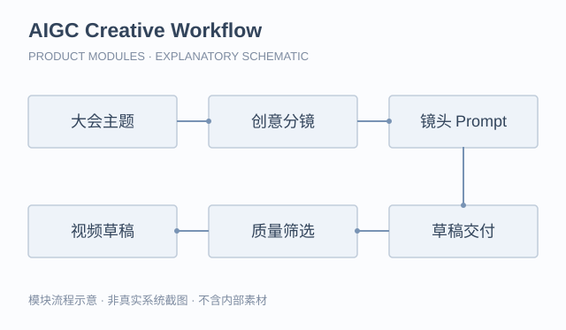

ByteDance · 字节跳动工作经历 / 领域 AI 产品实践
火山引擎 FORCE 大会宣传片
独立完成 · AIGC 内容实践 · 文生视频草稿交付
独立完成从创意构思、分镜脚本、提示词设计到文生视频草稿交付的完整流程，验证 AIGC 在内容生产场景中的创意表达和质量控制方法。
项目成果
- 创意与制作：独立完成主题拆解、创意构思、分镜脚本、镜头语言和提示词设计。
- 质量控制：对主体一致性、风格和镜头衔接进行多轮筛选与修正，交付文生视频草稿；未标注正式投放或大会播放。
场景与产品职责
将大会主题与传播重点转化为具体镜头、画面风格和叙事节奏，同时控制生成内容的一致性与衔接。
内容策划与分镜设计
围绕大会主题拆解核心信息和传播重点，完成脚本结构、镜头语言、画面风格和叙事节奏设计。
生成质量控制
将创意拆分为分镜提示词，对主体一致性、画面风格和镜头衔接进行多轮筛选与修正，提升生成结果的可用性，完成宣传片草稿交付。
关键取舍
- 先拆解叙事与镜头，再将创意转成分镜提示词。
- 对主体、风格、镜头衔接分别做筛选和修正。
- 明确交付为草稿，不写成正式投放、大会播放或传播成绩。
产品流程示意（非系统截图）

产品取舍深挖
主题先于生成
已确认从大会主题拆分信息、脚本、镜头与叙事节奏。先明确传播重点，再按镜头生成，避免把素材堆叠当成片。
生成质量不是单一审美分
主体一致、风格、镜头衔接分别筛选修正。没有原始分镜/草稿，不用生成替代视频或美化截图充当本人原作。
草稿交付和公开传播分开
已确认草稿交付，不等于大会播放或正式投放；作品集继续保持草稿身份。
建议指标口径
建议定义，不声称原项目已经按此统计；不添加历史成绩。
- 镜头可用率：评审后可进入草稿的镜头 / 生成候选镜头；需有原素材和审片记录
- 一致性问题：主体/服装/场景/风格分别记录，不合并为未经校准总分
- 返工轮次与耗时：使用实际版本和时间记录；用户未提供，不能编造
- 传播结果：只有正式投放及真实数据后才能填写，不适用于当前草稿
后续验收方案
建议测试，不声称在原上线项目中已执行。
- 同一主体跨镜头：检查服装、轮廓、风格和关系，不把高分单帧等同视频一致。
- 图中文字或品牌元素：必须核验可用性与许可。
- 衔接和节奏：按连续播放审查，不只看静态截图。
- 素材使用范围：可公开许可与大会投放分别确认。
仍缺原始证据
- 原草稿、分镜、使用模型与版本记录
- 素材公开许可和可公开镜头
- 正式播放/投放证据（若未来发生）
证据与公开边界
草稿交付依据本人履历；成片、分镜源文件、使用模型、播放与投放记录未提供。本页不生成替代视频冒充真实作品。
公司归属和工作经历性质经本人确认。正式职位、团队和日期未提供，不补写。所有职责与指标为本人提供并确认可公开的履历；本页不公开内部代码、图纸、客户数据、真实系统截图或原始统计。